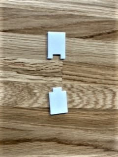
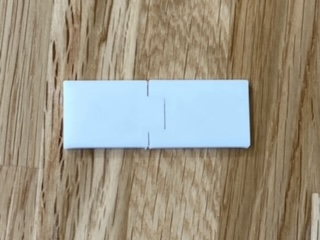

<h1>更新　2021 4/23</h1>
<font size="5">草刈り用具の試作　①接続部分の作成<font>
    <br>
    <br>
    
    <br>
1.実際に作ってみて<br>

<br>
<br>

<br><br>
<br><br>
接続することは出来たが嵌め込みづらく、取れやすいので改良の余地あり。
これを使い自由に先端を交換できる草刈り用品が作れる！　かも・・・